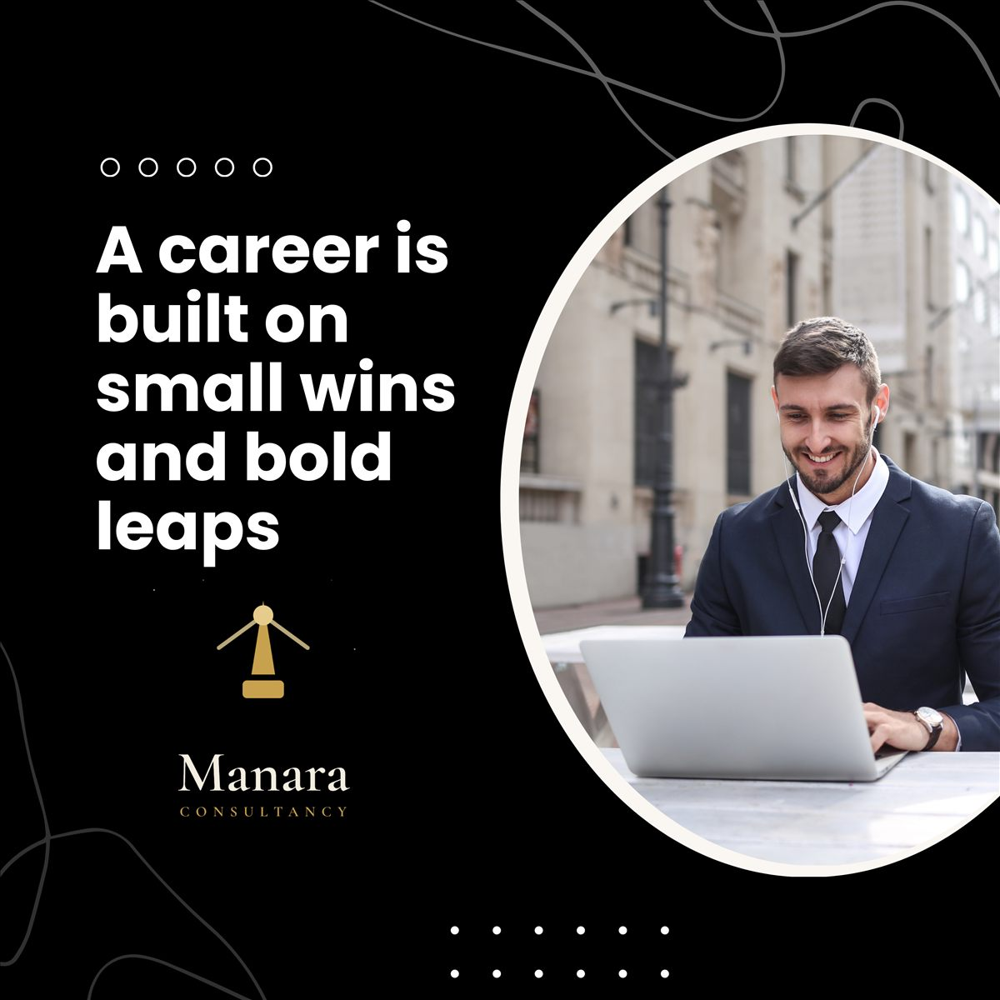

A fixed point in changing waters.
Manara — Arabic for lighthouse — is an advisory house built on a simple belief: a lighthouse never chases the ship. It stays still, burns clearly, and lets the captain find the way. For more than a decade we have been that steady light for companies, careers and scholars across the region and beyond.
Our story & experience
What began in Beirut as focused counsel for a handful of founders has grown, over ten-plus years, into a full advisory house. We have guided family businesses through succession, helped startups enter new markets, positioned executives for the roles they wanted, and stood beside graduate scholars from proposal to defense.
Today our work spans Lebanon, the United Kingdom, the United States, Canada and Dubai — local roots with a regional and international reach across the MENA markets we know intimately. Every engagement is handled with discretion, and every recommendation is one we would act on ourselves.
"A lighthouse never chases the ship. It stays still, burns clearly, and lets the captain find the way."
Our mottoWhat guides us
Vision
To be the most trusted advisory light in the region — the name businesses, professionals and scholars turn to when the waters are hardest to read.
Mission
To turn complexity into clear, confident decisions — pairing rigorous analysis with honest counsel, and staying close through execution, not just advice.
Values
Discretion, precision and genuine commitment. We take on fewer engagements, and we own the outcome of every one — a thousand no's for every yes.
What we do
Eight practices, one standard of care. Each links to its own page.
Sustainability & responsibility
A lighthouse serves the whole coast, not one ship. We hold ourselves to the same standard — building advice that lasts and a practice that gives back.

Lasting value
We favour durable strategy over quick wins — solutions our clients can run long after our engagement ends.
Low-footprint delivery
Remote-first, paperless engagements and digital-first tools keep our operating footprint deliberately light.
Knowledge that gives back
We mentor emerging scholars and share practical guidance through our blog, widening access to good counsel.
Ethical practice
Strict confidentiality, honest scoping and NDAs on request — we only recommend what we would do ourselves.
Let's find your bearings.
Every engagement begins with a conversation. Tell us where you're headed and we'll help you chart the course.